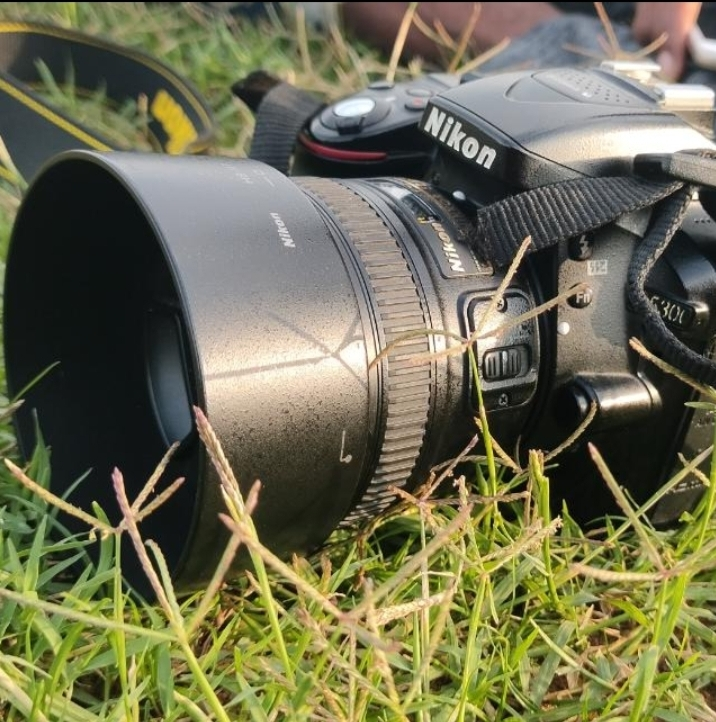
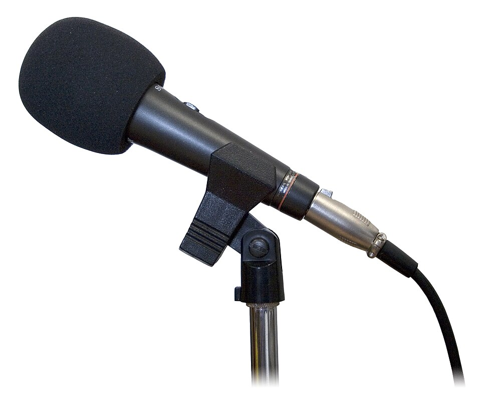
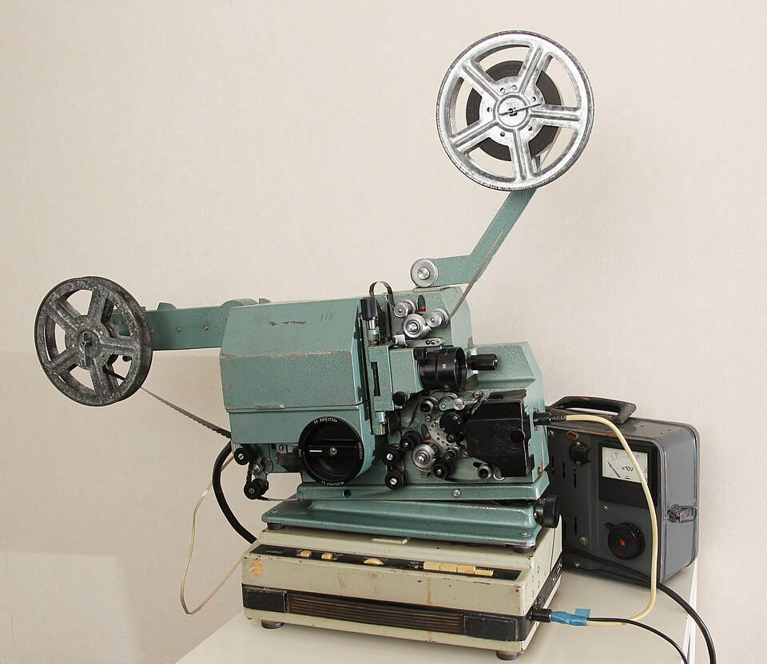

📄
Текст
Количество символов, общий объём текста и дополнительные элементы.
Текст, фотографии, музыка и видео — всё это хранится в виде файлов. Но почему одна страница текста занимает совсем немного места, а фильм может потребовать десятки гигабайт?
Разберёмся, что такое размер файла, сравним характерные объёмы данных и узнаем, от чего они зависят.
Любая информация, которую мы сохраняем на компьютере, занимает определённое место в памяти устройства. Размер файла — это объём памяти, необходимый для хранения данных, содержащихся в этом файле.
В одном файле может храниться текст, изображение, звук, видеозапись или другие данные. Компьютеру необходимо сохранить все эти данные, поэтому каждый файл занимает определённый объём памяти.
Чем больше данных необходимо сохранить, тем больше места может потребоваться для файла. Размер выражается в тех же единицах, которые мы изучали на прошлом уроке: байтах, килобайтах, мегабайтах и гигабайтах.
Размер файла — это не его название и не размеры изображения на экране. Он показывает, сколько памяти занимают сохранённые данные.
Размер файла может быть очень маленьким или очень большим. Поэтому для его записи используют разные единицы измерения информации.
Для небольших объёмов данных удобно использовать байты и килобайты. Для фотографий, музыки и многих видеозаписей — мегабайты. Для больших коллекций данных и полнометражных фильмов могут потребоваться гигабайты.
Текст состоит из символов: букв, цифр, знаков препинания и пробелов. Чем больше текста необходимо сохранить, тем больше данных обычно содержит файл.
Примерно 1–1,5 Кбайта.
Примерно 300–600 Кбайт.
Электронная книга может содержать сотни страниц, но при этом занимать меньше места, чем одна фотография.
Представим страницу, состоящую из заголовка и нескольких абзацев. Каждый символ добавляет данные, которые необходимо сохранить.
Учебная схема страницы документа.
Обычный текст обычно занимает сравнительно мало места. Даже большой текстовый материал может иметь размер всего в несколько сотен килобайт.
Цифровое изображение состоит из множества маленьких элементов — пикселей. Каждый пиксель хранит информацию о цвете и яркости определённой точки. Поэтому для сохранения изображения требуется больше данных, чем для обычной текстовой страницы.

1–2 Мбайта
Это заметно больше, чем размер одной страницы обычного текста.
Однако размер фотографий может сильно различаться: всё зависит от разрешения, детализации и качества изображения.
При увеличении изображения можно рассмотреть отдельные пиксели. Вместе они образуют целостную картину.
Условная схема пиксельного изображения.
Две фотографии могут выглядеть примерно одинаково, но иметь разный размер файла.
Звук можно записать и сохранить в цифровом виде. Компьютер получает данные, описывающие звуковой сигнал, и сохраняет их в файле.

10 Мбайт
Одна музыкальная запись может занимать больше места, чем сотни страниц обычного текста.
Размер зависит от продолжительности записи и качества цифрового звука.
Звуковую волну можно представить в виде графика, который показывает, как меняется сигнал со временем.
Условная схема звукового сигнала.
Короткая запись голоса обычно занимает меньше места, чем длинная музыкальная запись.
Видео представляет собой последовательность изображений, которые быстро сменяют друг друга. Кроме изображения, видеозапись часто содержит и звуковое сопровождение. Поэтому для сохранения видео требуется значительно больше данных, чем для обычного текста или фотографии.

Примерно 180 Мбайт.
Примерно 20–50 Гбайт.
Продолжительный фильм может занимать в тысячи раз больше места, чем обычная страница текста.
Рассмотрим условную киноленту: отдельные изображения располагаются друг за другом и создают впечатление непрерывного движения.
Учебная схема последовательности кадров.
Продолжительность. Чем длиннее видеозапись, тем больше данных она может содержать. Разрешение. Чем больше точек в каждом кадре, тем больше информации необходимо сохранить. Частота кадров. Чем больше кадров отображается за секунду, тем больше изображений содержит запись. Звук. Звуковое сопровождение также увеличивает общий объём данных.
Теперь соберём все примеры вместе и расположим их по возрастанию характерного размера.
Одна страница текста может занимать всего около одного килобайта, а полнометражный фильм — десятки гигабайт. Это показывает, насколько сильно размер файла зависит от вида и количества сохраняемых данных.
Размеры карточек не являются графической шкалой: значения приведены для сравнения, а не в масштабе.
Приведённые числа — это ориентиры, а не неизменные значения. Два файла одного типа могут заметно отличаться по размеру. Всё зависит от содержания и характеристик сохранённых данных.
Количество символов, общий объём текста и дополнительные элементы.
Количество пикселей, детализация и применяемое сжатие.
Продолжительность и качество цифровой записи.
Продолжительность, разрешение, частота кадров и качество звука.
Одна фотография может содержать меньше пикселей и деталей, а другая — больше.
Поэтому их размеры могут различаться, даже если обе фотографии сделаны одной камерой.
Короткая запись голоса и продолжительная музыкальная композиция содержат разное количество звуковых данных.
Поэтому их размеры могут заметно отличаться.
Нельзя определить точный размер файла только по его категории. Например, не каждая фотография обязательно занимает 1–2 Мбайта, а не каждый фильм — 20–50 Гбайт. Это приблизительные характерные значения, которые помогают оценивать объёмы данных.
Понимание размеров файлов помогает разумно использовать память компьютера и оценивать, сколько места потребуется для хранения или передачи информации.
Можно заранее оценить, сколько места займут фотографии, музыкальные записи и видео на устройстве.
Размер файла помогает понять, сколько данных предстоит передать через сеть.
Можно сравнивать файлы, находить особенно большие объёмы данных и планировать использование памяти.
Вспомни основные понятия урока и попробуй объяснить, почему разные виды данных занимают неодинаковое количество памяти.
Что называют размером файла?
В каких единицах измеряется размер файла?
Каков примерный размер одной страницы обычного текста?
Сколько примерно может занимать электронная книга?
Почему фотография обычно занимает больше места, чем одна страница текста?
Какие характеристики изображения влияют на его размер?
Каков характерный размер записи одной песни?
От чего зависит размер звуковой записи?
Почему видеофайлы обычно занимают больше места, чем фотографии?
Какие характеристики видеозаписи влияют на её размер?
Почему нельзя считать характерные размеры файлов строго постоянными?
Зачем пользователю компьютера уметь оценивать размеры файлов?
Сегодня мы сравнили характерные размеры текстовых, графических, звуковых и видеофайлов и выяснили, почему объём данных может различаться в тысячи раз.
Обычно занимает сравнительно небольшой объём памяти.
Часто измеряются мегабайтами, а их размер зависит от содержания и качества данных.
Может занимать сотни мегабайт и десятки гигабайт.
Размер файла показывает, сколько памяти требуется для хранения данных. Он зависит от вида информации, её количества и характеристик. Поэтому при работе с компьютером важно уметь оценивать объём сохраняемых данных.
Об иллюстрациях. Фотографии книги, фотокамеры, микрофона и кинопроектора взяты из Wikimedia Commons. Ссылки на авторов и условия использования указаны непосредственно под изображениями.
Остальные иллюстрации — самостоятельно составленные статические схемы HTML и CSS.
Приведённые размеры файлов являются приблизительными учебными ориентирами. Фактический размер зависит от характеристик и содержания данных.